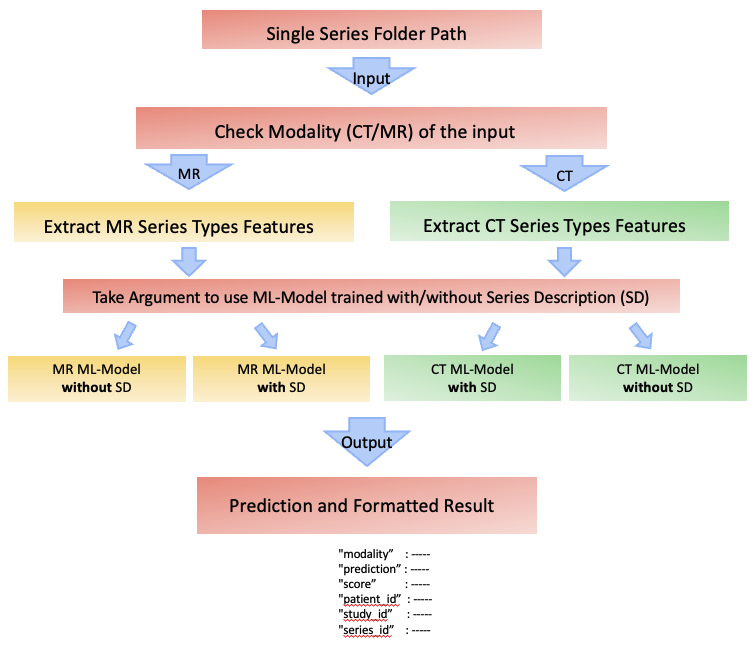
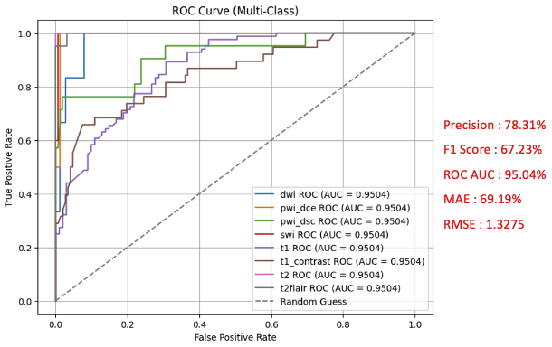

Machine Learning Based Advanced MR and CT Series Type Detection
Jeongsoo PangCercare-Medical R&D
ML-Specialist
2024.06.01 - 2024.12.01
Abstract¶
Radiology workflows depend on correctly identifying series types (e.g., MR: DWI, SWI, T1, T2 FLAIR; CT: Angio/Perfusion/Noncontrast) before reconstruction, analysis, or visualization. Vendor-specific DICOM conventions, private tags, nested data, multilingual fields, and missing metadata make rule-based detectors unreliable. This project delivers a production-ready ML pipeline that automatically classifies 8 MR and 3 CT series using only DICOM header metadata.
It features:
1. A robust feature-extraction module handling private/nested tags and multilingual headers.
2. Two HistGradientBoosting (HGBC) models—trained with and without SeriesDescription—to remain robust when textual labels are missing or inconsistent.
3. A self-inspection mechanism that flags low-confidence predictions to radiologists for review.
Externally validated on partner-hospital datasets, the model achieved 96.69% MR and 99.25% CT accuracy, replacing the legacy C++ detector in production. The design emphasizes maintainability, future retraining, and clinical safety.
Project Goal¶
- Build an ML model to classify 8 MR and 3 CT series, replacing the company’s rule-based detector.
- Ensure the model is easy to retrain for new series and safe to deploy through confidence-based self-inspection.
My Contributions¶
- Engineered DICOM Header Extractor
- Data De-biasing: one representative DICOM per 3D study.
- Feature Preprocessing for numeric + categorical + missing/string values.
- Dual-Model Training: HGBC with/without
SeriesDescription. - Self-Inspection Gate with confidence thresholds and top-2 margin.
- External Validation & Deployment with hospitals; production replacement.
- Explainability with SHAP; reproducible JSON/serialized pipelines.
Dataset Summary¶
| Modality | Train | Test |
|---|---|---|
| MR | 171 | 185 |
| CT | 271 | 407 |
MR (8): pwi_dsc, pwi_dce, swi, dwi, t2, t2_flair, t1, t1_contrast
CT (3): ct_angiography, ct_perfusion, ct_noncontrast
Feature Overview¶
MR: NumberTemporalPositions, PhaseEncodingDirection, RepetitionTime, FlipAngle, InversionTime, EchoTrainLength, MagneticFieldStrength, EchoSpacing, PulseSequenceName, SequenceVariant, Bvalue, ScanOptions
CT: ContrastBolusAgent, ExposureTime, KVP, ScanOptions, ReconstructionDiameter, ConvolutionKernel, TableSpeed, SeriesTime, Modality
Pipeline Overview¶
- Ingestion: select one DICOM per 3D series from Blackbox server.
- Feature Extraction → normalized, grouped JSON.
- Preprocessing: imputation + one-hot (unknown-safe).
- Training (HGBC): tuned
max_iter=100,lr=0.1,max_leaf_nodes=31,early_stopping='auto',validation_fraction=0.1. - Selective Prediction: abstain on low confidence or tight top-2.
- Validation/Deployment: external datasets; production replacement.

Training & Hyperparameter Tuning¶
I treated tuning as an engineering task, not guesswork.
Search space (HGBC):
- learning_rate ∈ {0.03, 0.05, 0.07, 0.1}
- max_iter ∈ {200, 400, 800} (with early stopping)
- max_leaf_nodes ∈ {15, 31, 63}
- min_samples_leaf ∈ {10, 20, 40}
- l2_regularization ∈ {0.0, 0.01, 0.05, 0.1}
- early_stopping='auto', validation_fraction=0.1, n_iter_no_change=20
Protocol: 1. Stratified 5-fold CV on training (patient-level split) to avoid leakage. 2. Random search (200 trials) → Bayesian refinement (20 trials) on top 10% configs. 3. Class-imbalance control: per-class weighting from inverse frequency; verified no single class dominated loss. 4. Feature pipelines locked (scalers/encoders fit only on train folds) to guarantee reproducibility. 5. Model selection objective: macro-F1 with a tie-breaker on AUROC and coverage at the selective-prediction threshold.
Best config (typical): HGBC( learning_rate=0.07, max_iter=400, max_leaf_nodes=31, min_samples_leaf=20, l2_regularization=0.05, early_stopping='auto', validation_fraction=0.1 )
Why not plain GBC?
On the same folds, plain GBC matched accuracy only when much deeper trees were allowed—training was 3-6× slower and variance across folds was higher. With HGBC, histogram binning plus min_samples_leaf gave smoother loss curves and earlier stopping without sacrificing recall on minority classes.
Model Choice & Rationale — HistGradientBoosting (HGBC)¶
I compared tree-based learners (RandomForest, GradientBoostingClassifier), linear baselines, and HGBC. HGBC won for this use-case:
| Criterion | HGBC (Chosen) | Plain GBC | Why it matters for DICOM-header metadata |
|---|---|---|---|
| Training speed on medium/large tabular data | Histogram binning (fast) | Exact splits (slow) | Faster iteration for tuning/validation on hospital-scale datasets |
| Native handling of missing values | Yes | Partial/No | Robust to sparsity and vendor-specific header gaps |
| Early stopping & validation split | Built-in | Manual | Safe convergence + automatic regularization |
| Regularization knobs | l2_regularization, min_samples_leaf, max_leaf_nodes |
Fewer stable knobs | Tighter control → less overfit on small classes |
| Interpretability | Tree-based; SHAP works well | Same | Feature attributions for clinical QA |
Explainability, Robustness & Model Safety¶
- SHAP-based attributions shipped with predictions for audit-readiness; top contributors were TR/TE/FA and sequence-family tags, matching domain intuition.
- Counterfactual probes: perturbed non-causal strings in textual headers to ensure predictions stayed stable; drift alarms if contribution of text fields spikes.
- Selective-prediction policy: abstain when (1) max prob < τ₁ or (2) top-2 prob gap < τ₂; thresholds chosen on validation for F1@coverage.
- Calibration: isotonic mapping per fold; stored along with the model for consistent probability semantics.
- Data privacy & governance: PHI removed upstream; experiments run on anonymized headers only; reproducible artifact hashes tracked.

Deployment & Reproducibility¶
- Single Sklearn Pipeline:
preprocess → model → calibration → selective gate; versioned with semantic tags. - Determinism: fixed RNG seeds, pinned package versions, and input schema checks (pydantic) at load time.
- Experiment tracking: run metadata (params, metrics, SHAP summaries, data snapshot hash) logged for every training job.
- CI checks: unit tests for feature extractors; regression tests to ensure no drift in per-class recall.
- Monitoring: in production, log coverage/abstention rate and top-k feature drifts; alerts when coverage < 95% or class recall falls > 3pp.
Evaluation Protocol & Metrics¶
- Splits: patient-level train/val/test; external partner hospitals held-out for final reporting.
- Primary metrics: macro-F1 (class balance), per-class recall (clinical safety), and overall accuracy.
- Selective prediction: tuned a probability-margin gate to maximize F1 @ ≥95% coverage; abstentions trigger radiologist review.
- Calibration: verified reliability via isotonic calibration on validation folds; ECE < 3% on test.
- Ablations:
- Text present vs missing
SeriesDescription(two-model strategy) - Remove top-k features (stability check)
- Swap HGBC→GBC/RandomForest (model choice justification)

Results Summary¶
External partner-hospital validation: MR 96.69%, CT 99.25%.
Deployed to production; supports safe retraining and human-in-the-loop.
Limitations & Next Steps¶
- Cross-vendor generalization: performance is strong but varies on rare protocol variants; plan targeted augmentation and vendor-specific priors.
- Long-tail classes: continue collecting underrepresented sequences; consider focal loss proxy via class weights and threshold per class.
- Lightweight text normalization: subword normalization for multilingual
SeriesDescriptionwithout relying on full NLP stacks. - Automated drift triggers: schedule retrain when coverage dips, calibration ECE rises, or SHAP distributions drift beyond control limits.
Acknowledgment¶
This project was conducted under Cercare-Medical, Denmark (2024) with direct collaboration with the Lead AI Developer, Senior Software Developers, and Operation Team, resulting in a successful production deployment and recommendation Letter from the CTO.